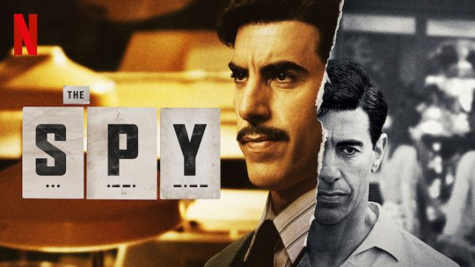
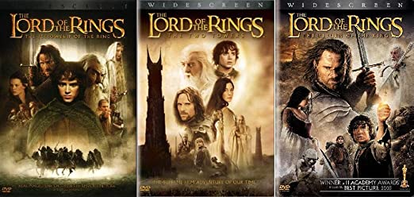

Eda Cansu
Hakkımda
Merhaba, ben Eda.
Istanbul'da yaşıyorum.
Öğreciyim. dizi, film izlemek ve kitap okumaktan müthiş keyif alıyorum.
Ayrıca Ted konuşmalarını takip etmekten de hoşlanıyorum.
Sevdiğim Diziler
- The Spy
- Sherlock
- The Handmaid's Tale



Sevdiğim Filmler
- The Lord of The Rings: The Fellowship of the Ring
- Beautiful Mind
- The Imitation Game


Sevdiğim Kitaplar
- Vedat Türkali - Bir Gün Tek Başına
- Kiran Millwood Hargrave - Kadınlar Adası
- Gogol - Ölü Canlar